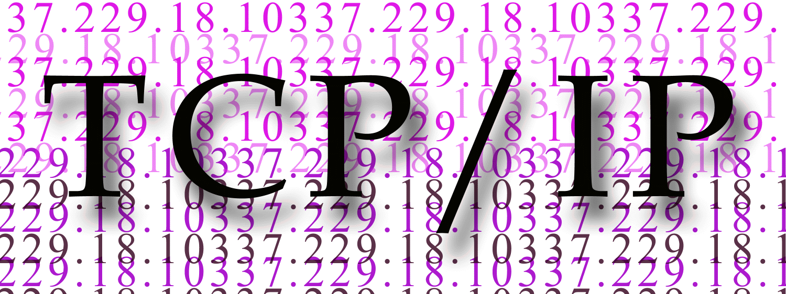

|  |
The goal of this course is to introduce students to fundamental topics of principles, design, implementation, and performance of computer networks. In addition, students will explore networking techniques and protocols through hands-on experiments. This course will provide the Computer Networking foundation necessary for more advanced courses, including Network Management, Distributed Systems, Cloud Computing, Network Security, etc. Topics include: Internet architecture, protocols, socket programming, congestion control, switching and routing, local area networks, Internet of things (IoT), network security, the end-to-end arguments and resource allocation.
| Week | Lecture | Readings |
| Jan. 22 | Introduction to Computer Networks I |
Reading: Chapter 1: Section 1.1-1.5 Extra Reading: Evolution of Computer Networks Programming Group Sign-up, due on Jan. 29 |
| Jan. 29 | Introduction to Computer Networks II |
Reading: Beej's Guide to Network Programming Socket Programming in Python Extra Reading: Wireshark Programming Assignment 1 is out and due on Feb. 19 |
| Feb. 5 | Socket Programming I and II |
Reading: Chapter 1: Section 1.5 Extra Reading: History of Ethernet |
| Feb. 12 | Socket Programming III and Network Performance |
Reading: Chapter 2: Section 2.1 Extra Reading: A Seminal Paper in Wireless Networks Homework Assignment 1 is out and due on March 1 |
| Feb. 19 | Connecting to Network I and II |
Reading: Chapter 2: Section 2.2-2.4 Extra Reading: 3D Animation: How Packet Travels in Network Programming Assignment 2 is out and due on March 18 |
| Feb. 26 | Connecting to a Network II and III |
Reading: Chapter 2: Section 2.5-2.8 |
| Mar. 4 | Local Area Networks and Mid-term Exam (Take-Home) |
|
| Mar. 11 | Spring Break |
|
| Mar. 18 | Coding Session |
Reading: Chapter 3: Section: 3.1-3.2 Extra Reading: Hub vs Switch vs Router |
| Mar. 25 | Internet Protocol I and II |
Reading: Chapter 3: Section: 3.2 Extra Reading: Wireshark IP |
| Apr. 1 | Internet Protocl II and Routing |
Reading: Chapter 3: Section: 3.2-3.3 Extra Reading: What is IoT? |
| Apr. 8 | TCP and Network Security |
Reading: Chapter 5: Section: 5.1-5.2; |
| Apr. 15 | Student Selected Topics Presentations I |
|
| Apr. 22 | Student Selected Topics Presentations II
| |
| Apr. 29 | Grad Student Project Presentation and Course Summary |
|
| May 6 | Final Exam |
|